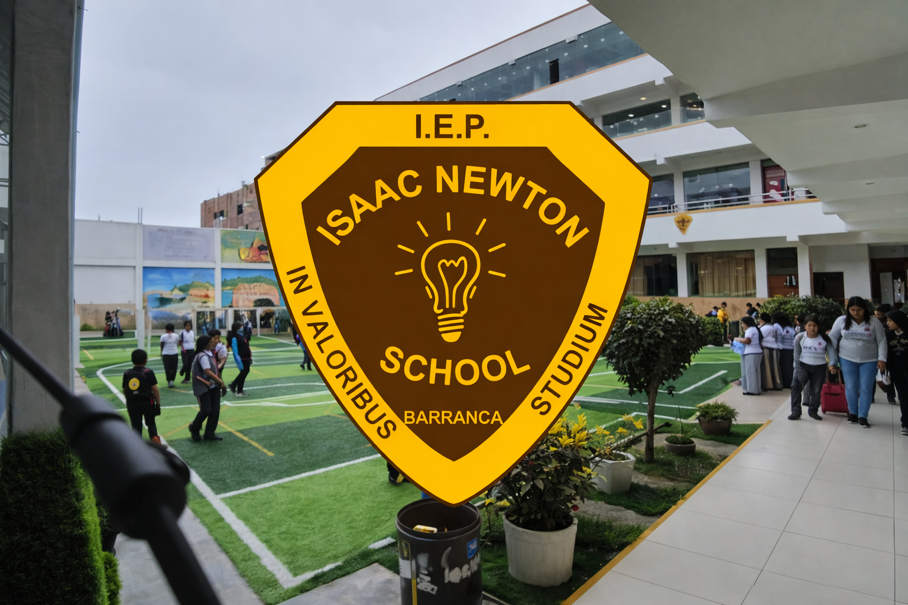
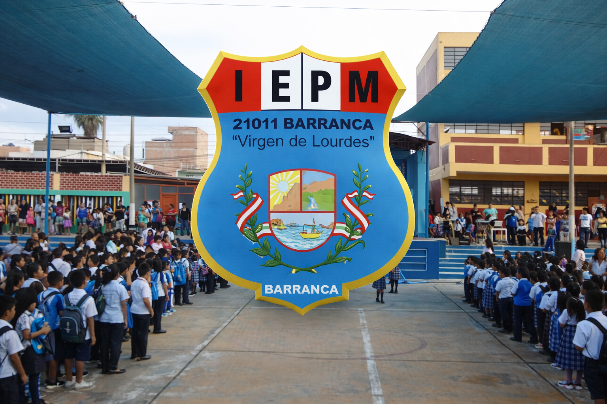
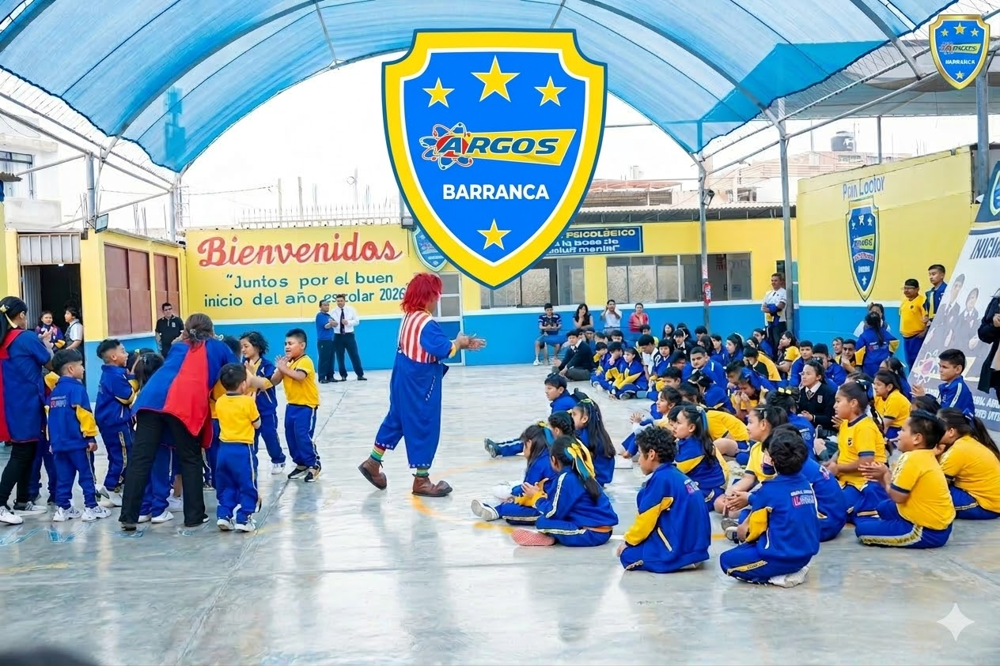
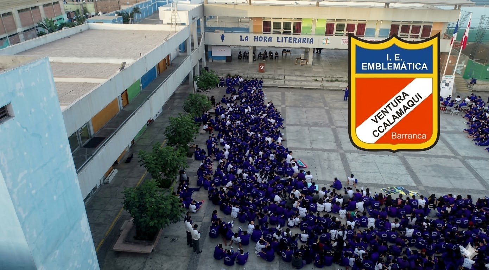
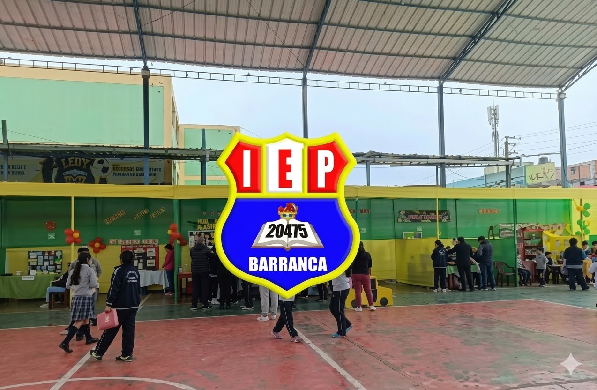
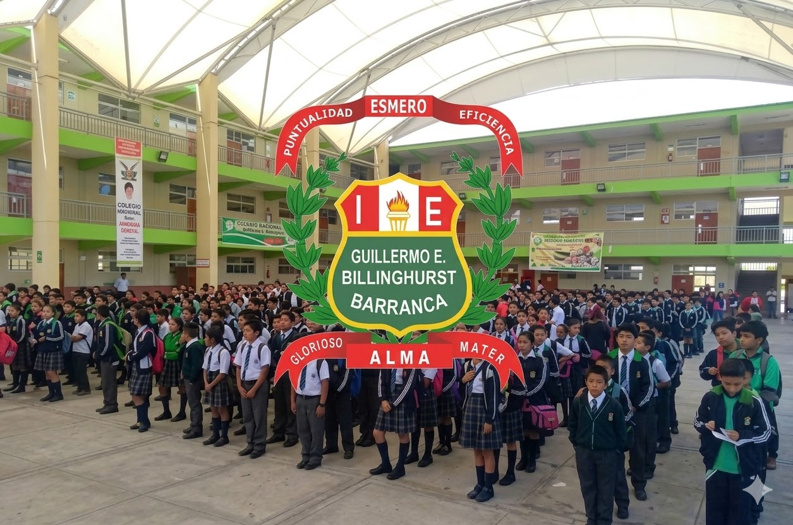
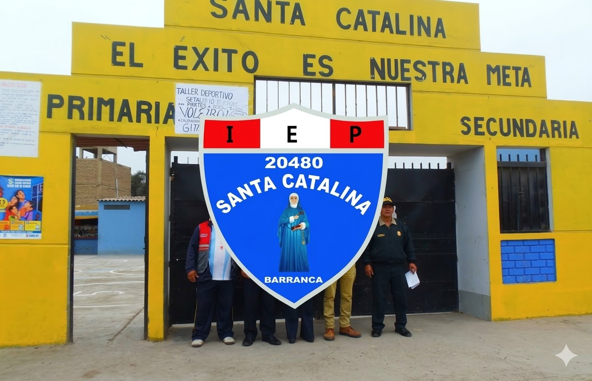

Educación Inicial

I.E.P. ISAAC NEWTON SCHOOL
Pje. Primavera, Barranca 15169

COLEGIO SAN AGUSTÍN BCA
Pje. Puerto Chico 412, Barranca 15169

I.E EL BUEN PASTOR
Jirón Ramon Zavala 420, Barranca 15169

I.E.I. N° 661
Manuel Seoane Corrales

LAS PALMAS NUEVA ESPERANZA
Av. Primavera 202

I.E N°21011 "VIRGEN DE LOURDES"
403, Ave Grau 479, Barranca
Educación Primaria
I.E."FE Y ALEGRIA 35 BARRANCA"
Urb. Las Gardenias, Barranca

I.E.P ARGOS COLLEGUE
Av. Lauriama 837, Barranca 15169

I.E VENTURA CCALAMAQUI
Jr. Sáenz Peña s/n

I.E.P VILLA MARÍA
Santa Cruz
COLEGIO SAN IGNACIO DE LOYOLA
Av. El Pacífico

I.E.P N° 20475
Jirón Alfonso Ugarte 414
Educación Secundaria

I.E GUILLERMO E. BILLINGHURST
Av. Miramar N° 595

I.E N° 20480 SANTA CATALINA
calle San Martín 130
I.E."FE Y ALEGRIA 35 BARRANCA"
Urb. Las Gardenias, Barranca
I.E.P ARGOS COLLEGUE
Av. Lauriama 837, Barranca 15169
I.E.P VILLA MARÍA
Santa Cruz
I.E EL BUEN PASTOR
Jirón Ramon Zavala 420, Barranca 15169